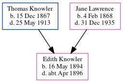

Edith May Knowler 1894 - c1896
[ Home ] | [ Calendar ] | [ Surnames Index ] | [ Errors ] | [ Family History ]The child of Thomas Knowler (an agricultural labourer) and Jane Lawrence, Edith Knowler, the first cousin twice-removed on the mother's side of Nigel Horne, was born in Thanet, Kent, England on 16 May 18941,2,3 and baptised in St Lawrence, Thanet, Kent, England on 21 Oct 1894. On 21 Oct 1894, she was living Southwood in Thanet6.
She died c. Apr 1896 in Eastry, Kent, England3,4 and was buried at St James's Church, Staple, Kent on 13 Apr 18965.
Parents
- Thomas William was born on 15 Dec 1867
- Jane was born on 4 Feb 1868
Citations
- England & Wales births 1837-2006 - Findmypast
- England & Wales, FreeBMD Birth Index, 1837-1915 Online publication - Provo, UT, USA: The Generations Network, Inc., 2006.Original data - General Register Office. England and Wales Civil Registration Indexes. London, England: General Register Office. © Crown copyright. Published by permission of the Cont
- England & Wales, FreeBMD Death Index: 1837-1915 Online publication - Provo, UT, USA: The Generations Network, Inc., 2006.Original data - General Register Office. England and Wales Civil Registration Indexes. London, England: General Register Office. © Crown copyright. Published by permission of the Cont
- England & Wales deaths 1837-2007 - Findmypast
- Kent, Canterbury Archdeaconry Burials - Findmypast
- KFHS CD29
Media
Canterbury Baptisms Transcription - GBPRS-CANT-B-96405993
Canterbury Burials Transcription - GBPRS-CANT-D-95290555
England & Wales deaths 1837-2007 Transcription - BMD-D-1896-2-AZ-000196-336
England & Wales births 1837-2006 Transcription - BMD-B-1894-2-AZ-000333-041
England, Births & Baptisms 1538-1975 Transcription - R_885344116
England, Births & Baptisms 1538-1975 Transcription - R_938186160
Family Tree
Map
Generated by ged2site. Last updated on Jul 3, 2024
Known Issues
21 Oct 1894: Not living with either parent in childhood when aged 0